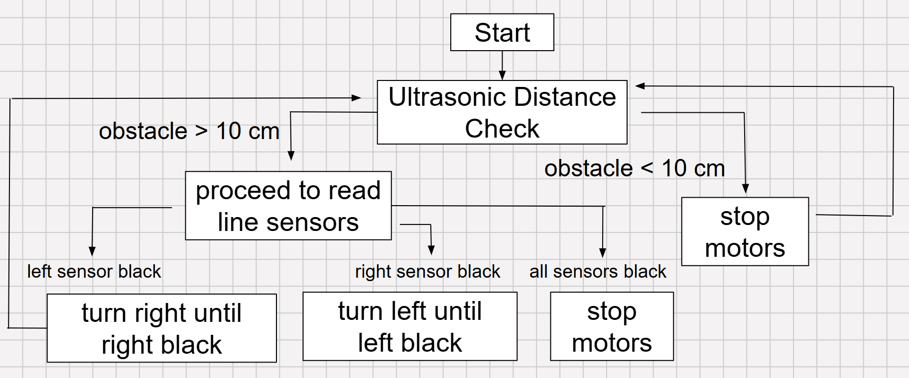
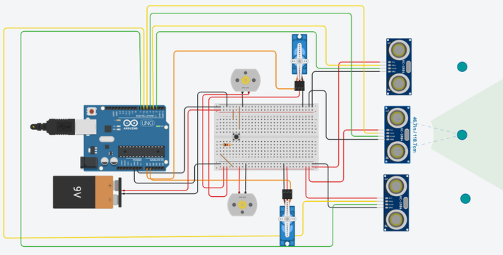
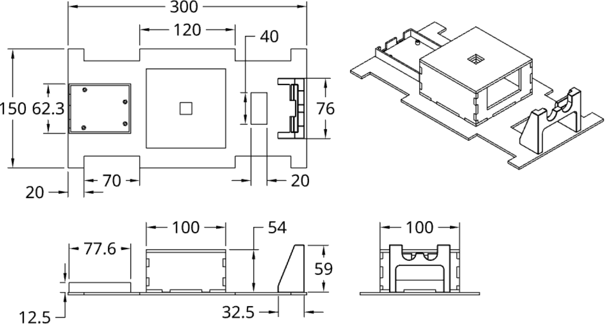
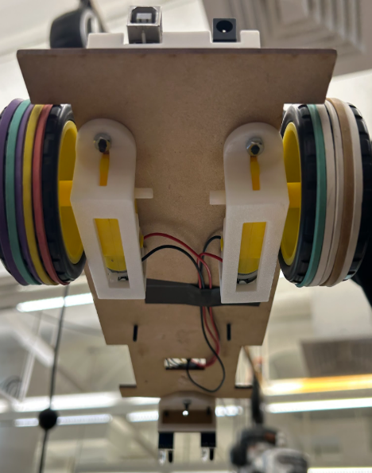
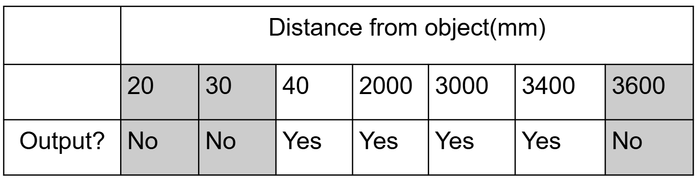
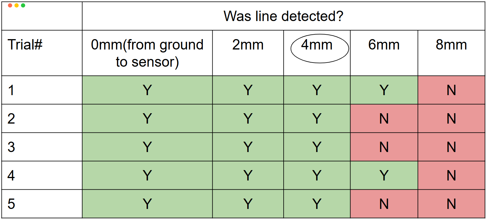
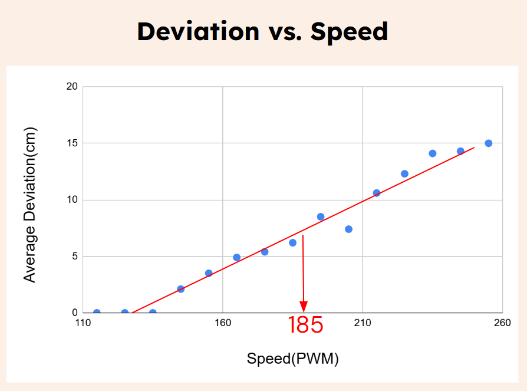
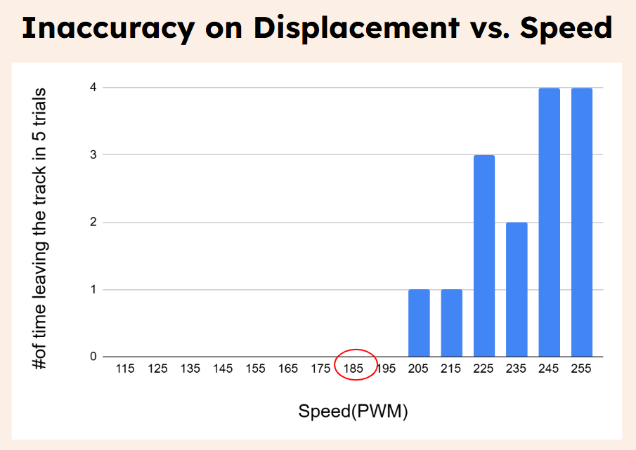

Line-Following Car
Led mechanical design of an autonomous vehicle capable of high-precision line following, obstacle detection, and automated course termination in a 4-person team.

Objectives
| Constraint | Metric |
|---|---|
| Follows Line Accurately | ≤ 3 cm deviation from track |
| Detects Objects and Respond | ≥ 10 cm detection range ≤ 200 ms response time |
| Budget | < $200 BOM |
| Size | ≤ 50 cm x 30 cm x 30 cm |
| Provide Alarm at the End | ≥ 60 db response |
Technical Specification (BOM)
Microcontroller: Arduino Uno (logic processing and integration of sensors and motor).

Figure 1: Logic map showing the system decision making process

Figure 2: Model of the circuit wiring. This was the preliminary design with 2 DC motors and 2 servo motors instead of 4 DC motors in final design.
Sensors: Infrared (IR) array for path tracking; Ultrasonic sensor for proximity detection.
Power System: 9V battery
Actuation: 4 DC motors (2 are driven)
Housing Design
I led the structural design of the vehicle, implementing a hybrid chassis architecture. This included a laser-cut 3mm acrylic and wood base integrated with a dedicated enclosure for cable management and custom 3D-printed housing for sensors.

Figure 3: Technical drawing of the housing assembly; measurements in mm.

Figure 4: Image of the 3D printed housing for DC motors.
Calibration and Optimization Tests
Ultrasonic Sensor
Testing confirmed an effective operational range of 40mm to 3400mm, satisfactory for the requirements for obstacle avoidance.

Table 1: Testing data of how far the ultrasonic sensor can detect object.
IR sensor
Through testing, we determined the optimal sensor height to be 4mm. While 2mm also provided high sensitivity, 4mm offered the necessary clearance to prevent sensor damage from surface irregularities.

Table 2: Trial data of the distance at which the set path can be detected by the IR sensor. Y stands for yes and N for no.
Optimizing speed
Data analysis identified a PWM (Pulse Width Modulation) speed of 185 as the optimal setting—balancing rapid course completion with zero track departures and manageable deviation.

Graph 1: Deviation vs. speed → showed how many cm on average the traveling path of the car deviated from the set path.

Graph 2: showed how many times the car left the track completely in 5 trials.
Troubleshooting
Challenge: Initial trials showed wheel slippage and insufficient motor torque.
Solution: Increased friction by applying rubber bands to the wheels. Additionally, we upgraded the power supply by adding more batteries, which further increased friction by increasing the vehicle's mass.
Result & Discussion
Metric Achievement
- Housing assembly I designed is stable and ensures all components operate together as one.
- All product features are necessary and applicable in the product, thus effectively utilizing budget.
- The constraints and metrics of the product are accurately met, accurately effective, and ultimately suitable for the design.
Video demo of line-following car final product
Future Improvements
- To address occasional "oscillations" (wobbling) during path correction, future iterations would implement a PID (Proportional-Integral-Derivative) controller to smooth out the motor response.